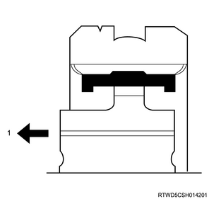

Main shaft reassembly (MUA)
1. 2nd gear installation
1. Apply the oil to the 2nd gear.
Note
- Apply the recommended lubricating oil to the inner surface of the 2nd gear and the needle bearing thrust surface.
2. Install the needle bearing to the main shaft.
3. Install the 2nd gear to the main shaft.
Note
- Install the dog gear to the main shaft in such a way that it faces the rear side of the transmission.
4. Apply the oil to the ring.
Note
- Apply the recommended lubricating oil to the ring.
5. Install the ring to the 2nd gear.
Note
- Apply the recommended lubricating oil to the inner surfaces of the inside ring, outside ring and blocking ring.
- Install the 2nd inside ring, 2nd outside ring, and 2nd block ring to the 2nd gear in that order.
- 2nd block ring
- 2nd outside ring
- 2nd inside ring
- 2nd gear
- Needle bearing
2. 1st - 2nd synchronizer assembly reassembly
1. Assemble the 1st - 2nd synchronizer assembly.
Note
- Confirm that the clutch hub and sleeve slide smoothly.
- Confirm that the insert is installed to the groove of the clutch hub ring correctly.
- Confirm that the insert spring is installed to the insert correctly.
- Set the insert spring in such a way that the openings of the spring face the different directions.

- Insert
- Insert spring
- Sleeve
- Clutch hub
3. 1st - 2nd synchronizer assembly installation
1. Install the 1st - 2nd synchronizer assembly to the main shaft.
Note
- Install in such a way that the one with the wider boss width faces the 2nd gear.

- 2nd gear side
2. Select the snap ring.
Note
- Select the snap ring that creates the minimum clearance between the clutch hub and the snap ring.

Note
- 3 types of snap rings are selectable.
- A snap ring can be identified with a color code.

Standard： 0.00 to 0.10 mm { 0.000 to 0.004 in }
| Snap ring thickness | Identification color |
| ： 1.80 mm { 0.071 in } | Colorless |
| ： 1.85 mm { 0.073 in } | Yellow |
| ： 1.90 mm { 0.075 in } | Blue |
3. Install the snap ring to the main shaft using a snap ring pliers.
Note
- Completely insert the snap ring into the snap ring groove of the main shaft.
4. 1st gear installation
1. Install the ring to the 1st gear.
Note
- Install the 1st block ring, 1st outside ring, and 1st inside ring to the 1st - 2nd synchronizer assembly.
2. Apply the oil to the ring.
Note
- Apply the recommended lubricating oil to the needle bearing, 1st gear thrust surface and bearing friction surface.
3. Install the needle bearing to the main shaft.
4. Install the 1st gear to the main shaft.
Note
- Install the dog gear to the main shaft in such a way that it faces the front side of the transmission.

- 1st gear thrust bearing
- 1st gear
- Needle bearing
- 1st inside ring
- 1st outside ring
- 1st block ring
5. Install the thrust bearing to the main shaft.
Note
- Install to the main shaft in such a way that the roller side faces the front side of the transmission.
5. Collar installation
1. Apply the oil to the main shaft.
Note
- Apply the recommended lubricating oil to the main shaft and main shaft bearing.
2. Install the main shaft bearing to the main shaft.
Note
- Install the main shaft bearing snap ring groove so that it faces the rear side of the transmission.
3. Install the color to the main shaft using special tool.
Note
- Using a pinion bearing installer and a press, press the needle bearing collar and the main shaft bearing gradually.
SST: 9-8522-1165-0 - pinion bearing installer
6. 3rd gear installation
1. Apply the oil to the 3rd gear.
Note
- Apply the recommended lubricating oil to the 3rd gear and the needle bearing.
2. Install the needle bearing to the main shaft.
3. Install the 3rd gear to the main shaft.
Note
- Install the dog gear to the main shaft in such a way that it faces the front side of the transmission.
7. 3rd block ring installation
1. Install the 3rd block ring to the main shaft.
8. 3rd - 4th synchronizer assembly reassembly
1. Assemble the 3rd - 4th synchronizer assembly.
Note
- Confirm that the clutch hub and sleeve slide smoothly.
- Confirm that the insert is installed to the groove of the clutch hub ring correctly.
- Confirm that the insert spring is installed to the insert correctly.
- Set the insert spring in such a way that the openings of the spring face the different directions.
- Insert
- Insert spring
- Sleeve
- Clutch hub
9. 3rd - 4th synchronizer assembly installation
1. Install the 3rd - 4th synchronizer assembly to the main shaft.
Note
- Install in such a way that the one with the wider boss width faces the 3rd gear.
- 3rd gear side
2. Select the snap ring.
Note
- Select the snap ring that creates the minimum clearance between the 3rd - 4th clutch hub and the snap ring.
Note
- 3 types of snap rings are selectable.
- A snap ring can be identified with a color code.
Standard： 0.0 to 0.1 mm { 0.000 to 0.004 in }
| Snap ring thickness | Identification color |
| ： 1.80 mm { 0.071 in } | White |
| ： 1.85 mm { 0.073 in } | Yellow |
| ： 1.90 mm { 0.075 in } | Blue |
3. Install the snap ring to the main shaft using a snap ring pliers.
Note
- Completely insert the snap ring into the snap ring groove of the main shaft.